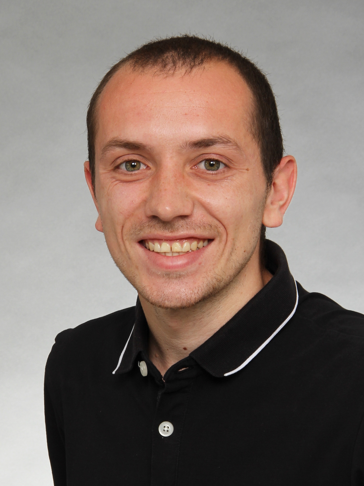

Sebastian Degen
About

I am currently a PhD student under supervision of Lukas Kühne
at Bielefeld University.
I am funded by the TRR 358 "Integral Structures in Geometry and Representation Theory".
Contact
Email: sdegen@math.uni-bielefeld.de
Office: V4-204
Fakultät für Mathematik
Universität Bielefeld
Universitätsstraße 25
33615 Bielefeld, Germany
Research
My research lies in the field of algebraic combinatorics and my main interests include matroids, q-matroids and their connections to algebraic coding theory.
I enjoy using and developing computer programs as tool for my research.
Writing
Preprints
- On gamma-vectors and Chow polynomials of restrictions of reflection arrangements (2025)
with Lisa Henetmayr, Magdaléna Mišinová, Paweł Pielasa, and Florian Rieg.
- The polytope of all q-rank functions (2025)
with Gianira N. Alfarano.
In revision at SIAM J. Discrete Math (SIDMA).
Published or accepted for publication
- Most q-matroids are not representable (2024)
with Lukas Kühne.
To appear in Combinatorial Theory.
Published in the Formal Power Series and Algebraic Combinatorics (FPSAC 2025) conference proceedings.
Presentations
Invited Talks
- The q-rank polytope. Kombinatorische Algebraische Geometrie Oberseminar, Paderborn University, Germany, April 2026.
- q-Matroids in Julia/Oscar. International Congress on Mathematical Software 2024, Durham University, England, July 2024.
Contributed Presentations
- The q-rank polytope. Young Researchers Conference on Combinatorial Synergies, FU Berlin, Germany, Mai 2026.
- The polytope of all q-rank functions. Kolloquium über Kombinatorik, Bielefeld University, Germany, November 2025.
- Most q-matroids are not representable. Error-correcting codes and combinatorial structures workshop, TU Eindhoven, Netherlands, March 2025.
- Most q-matroids are not representable. Bielefeld-Münster Seminar, Münster University, Germany, January 2025.
- Almost all q-matroids are not representable. Workshop on (mostly) Matroids, Institute for Basic Science (IBS) Daejeon, South Korea, August 2024.
- An introduction to (representable) q-matroids. CRC-TRR 358 Graduate Seminar, Bielefeld University, Germany, July 2024.
Events (co)-organized
Travel
A list of conferences I attained/will attain:
- Young Researchers Conference on Combinatorial Synergies, Mai 2026, FU Berlin, Germany.
- Developments in Algorithmic, Discrete and Tropical Geometry, February 2026, Zuse Institute, Berlin, Germany.
- KOLKOM: Kolloquium über Kombinatorik, November 2025, Bielefeld University, Germany.
- Summer School on Positivity in K-theory and Lattice Points, August 2025, Bernoulli Center EPFL, Lausanne, Switzerland.
- Formal Power Series and Algebraic Combinatorics 2025, July 2025, Hokkaido University, Sapporo, Japan.
- Modern Developments in Matroid Theory, June 2025, Mathematisches Forschungsinstitut Oberwolfach, Germany.
- Error-correcting codes and combinatorial structures workshop, March 2025, TU Eindhoven, Netherlands.
- Geometry without Geometry, December 2024, Frankfurt University, Germany.
- Workshop on (mostly) Matroids 2024, August 2024, IBS Daejeon, South Korea.
- International Congress on Mathematical Software 2024, July 2024, Durham University, England.
- Summer School in Algebraic Combinatorics, July 2024, MPI Leipzig, Germany.
- Graduate Student Meeting in Applied Algebra and Combinatorics, April 2024, FU Berlin, Germany.
- Open Problems on Rank-Metric Codes, February 2024, University of Campania, Caserta, Italy.
- Polymake Workshop 2024, January 2024, TU Berlin, Germany.
- Workshop on Geometric and Algebraic Combinatorics, January 2024, University of Cantabria, Santander, Spain.
- Chow lectures, October 2023, MPI Leipzig, Germany.
- Summer School in Algebraic, Asymptotic and Enumerative Combinatorics, August 2023, Mathematical Research and Conference Center, Będlewo, Poland.
Research Programs/Initiatives
I was an assistant project leader and mentor during the first Dive into Research (DiR)
"Simplicial Arrangements and Matroids"
of the SPP 2458 "Combinatorial Synergies", which took place at Hannover University in March 2025.
Short Biography
- Since Mai 2023: PhD, Bielefeld University
- 2018-2022: Master, University of Cologne
- 2014-2018: Bachelor, University of Cologne